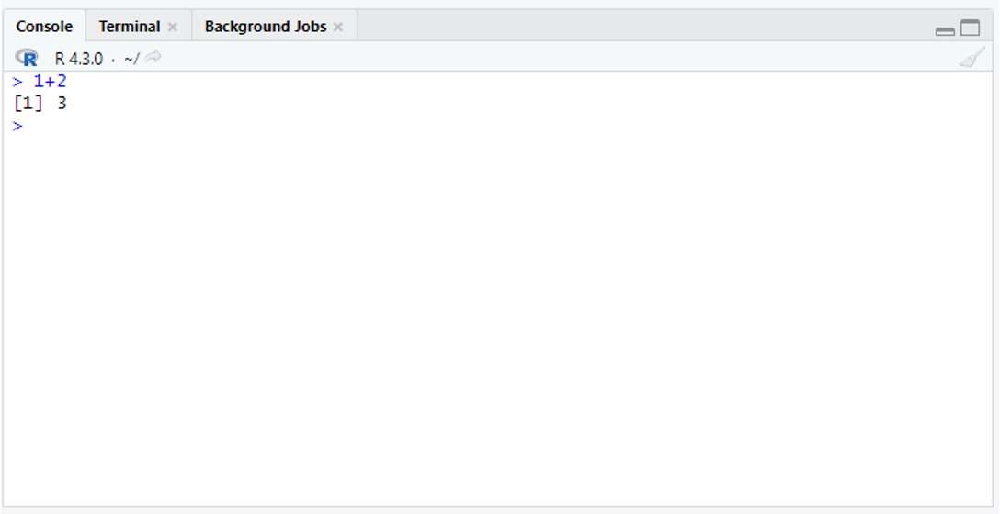

#==================================================#
# Introdução ao R
# data: 15 de setembro de 2023
#==================================================#
#Sintaxe e operações aritméticas ####
#soma - utilizar o operador aritmético "+"
1+2
#subtração - utilizar o operador aritmético "-"
10 - 5 2 Introdução ao R
Nesta capítulo, inicialmente iremos nos familiarizar com a interface do Rstudio, e com conceitos introdutórios da linguagem R. Os scripts podem ser executados no r base com algumas adaptações. Neste tópico, os principais conceitos para se familiarizar são:
Como executar um comando no R;
O que são objetos;
Funções no R;
Estruturas de dados - vetores, matrizes, dataframes e outros;
Como trabalhar com estruturas de dados: selecionar subconjuntos de elementos.
2.1 A Interface do RStudio
No Rstudio podemos visualizar 4 janelas (Figura 2.1), sendo elas:
- Editor: é onde digitamos os códigos. Nele temos um arquivo de texto que chamamos script. Se ela não aparecer, crie um novo script clicando no botão de atalho do canto superior esquerdo como apresentado no exemplo mais adiante.
- Console: é a linha de comandos do R. Os comandos executados aparecem depois do símbolo “
>”, e os resultados também aparecem no console. - Ambiente e história: onde ficam os objetos criados. “História”apresenta linhas de código recentemente utilizadas.
- Output: Apresenta outras informações, como gráficos gerados, arquivos de ajuda, etc.

2.2 Criando um script
Uma das melhores formas de registrar as análises realizadas para posteriormente executá-las novamente no R é salvando um script com todas as informações e incluindo os comentários após o “#” de forma a organizar e lembrar o que foi feito. O script pode ser salvo com a extensão .R. Abaixo temos um exemplo de script, utilizando o “#”, e também os símbolos de “=” e “-” de forma a delimitar blocos. Observe que tudo que está após os “#” fica realçado da mesma cor pela marcação de sintaxe (Figura 2.2).

Abaixo temos um exemplo de texto script:
Obs.: no Rstudio, após o título de um tópico iniciado com hashtag, você pode usar 4 hashtags seguidos (####) para indicar um tópico principal; também pode utilizar ==== para indicar um tópico secundário e ---- para indicar um tópico terciário.
2.3 Sintaxe e operações aritméticas
O R pode ser utilizado para realizar cálculos simples. Para executar um comando no R, faça alguma das duas ações:
- Digite
1 + 2no editor e pressione Ctrl+ENTER. Assim a informação passada no editor será executada no script - Digite
1 + 2diretamente no console e pressione ENTER
1 + 2[1] 3O resultado da digitação aparece como na Figura 2.3 .

Como resposta, teremos o resultado da operação.
2.3.1 Exemplos de operações aritméticas no R
Você pode realizar as seguintes operações matemáticas e a descrição delas no editor. Depois disso, execute-as, deixando a barra de digitação na linha a ser executada e clicando CTRL + ENTER. Você também pode selecionar todo o trecho a ser executado e executar com CTRL + ENTER:
10 + 5 #soma
10 - 5 #subtração
10 * 5 #multipicação
10 / 5 #divisão
11 %/% 5 #divisão de inteiros
11 %% 5 #divisão modularAo executar o código acima, o resultado será exibido no console Figura 2.4

2.4 Atribuição: criando objetos
Ao executar o comando executado acima, obtemos o resultado da operação. No entanto esse resultado não é salvo em nenhum local. Na linguagem R, para que nosso resultado fique salvo para uma próxima etapa, devemos criar um objeto.
O R é uma linguagem orientada a objetos. As planilhas, resultados de análise, funções utilizadas para realizar as análises, etc, são salvos como objetos. Para criar objetos, utilizamos o operador de atribuição (<-). Assim, podemos criar um objeto no R que irá salvar o resultado no R:
a <- 1 + 2Observe que, diferentemente do passo anterior, não obtivemos um resultado no prompt. Entretanto podemos observar o resultado chamando pelo objeto a que criamos. Para isso, simplesmente escrevemos o nome do objeto (a) no script e clicamos CTRL+ENTER:
a[1] 3Podemos utilizar os símbolos de atribuição como o sinal de menor seguido de hífen, formando uma seta (<-), mas isto em geral também pode ser feito utilizando o sinal de igualdade (=). Após digitar o valor, você poderá utilizar o símbolo de atribuição ao contrário. A função assign() pode ser utilizada para atribuição (obs: funções são explicadas em um tópico posterior). Todos os comandos abaixo funcionam da mesma forma: atribuem o valor de 1 + 2 ao objeto a:
a <- 1 + 2
a = 1 + 2
1 + 2 -> a
assign("a", 1 + 2)Nomes de objetos Podemos colocar o nome que quisermos em um objeto. No exemplo abaixo criamos um objeto de texto (caracteres) Meu.objeto. Para inserir texto, colocamos este entre aspas (""). Observe que ao chamar o objeto, tivemos erro no primeiro caso. isso se deve ao fato de utilizarmos letra maiúscula no nome do objeto. Assim, vemos que a linguagem R e sensível a diferenças entre maiúsculas e minúsculas.
Meu.objeto <- "Aprender R é fácil"
meu.objeto #retorna uma mensagem de erro,
#pois escrevemos o nome do objeto em minúsculo.
Meu.objeto #retorna o resultado esperado - imprime o textoObserve que todos os objetos criados aparecem na tela superior á esquerda, na aba Environment.
Atenção: Alguns nomes de objeto não são aceitos, por exemplo:
- O nome de um objeto não pode começar por um número;
- O nome de um objeto não pode ser separado por hífen (
-); - Não pode haver espaço no nome do objeto
1meuobjeto #não funciona; nome não pode começar por número
meu-objeto #não funciona
meu objeto #erro -não pode haver espaço no nome
meu.objeto1 #funciona, nome apresenta número mas só no final.Essas limitações podem ser contornadas caso se inclua o nome do objeto entre o sinal ``.
`1Meu objeto-` <- "Aprender R é fácil"
`1Meu objeto-` #funcionou2.5 Funções
Um tipo de objeto que temos no R são as funções. Funções são blocos de código que executam uma tarefa específica e podem ser reutilizados em diferentes partes do seu programa. Elas ajudam a organizar o código, tornando-o mais eficiente e fácil de entender. Funções podem receber entradas (argumentos ou parâmetros) e retornar um valor como resultado. Por exemplo podemos usar a função log para calcular o logaritmo de um determinado valor:
log(3)[1] 1.098612log(a) #calcula o logaritmo do objeto a[1] 1.098612Assim calculamos o logaritmo de 3. Entretanto, como sabemos qual é a base do logaritmo? Veremos isso a seguir.
2.5.1 Ajuda de funções
O R apresenta uma documentação abrangente, e para cada função e pacote há uma descrição do seu funcionamento. Essa documentação é importante e permite uma compreensão mais abrangente de como cada função pode ser utilizada. Para entender melhor uma função, podemos realizar pesquisas na ajuda. Isso pode ser realizado de diferentes formas:
help(log)
?logAo observar a ajuda da função log, no tópico “Usage” observamos que podemos utilizar a função log com a seguinte sintaxe:
log(x, base = exp(1))
Assim, se quisermos calcular o logaritmo de 10 na base 10, poderíamos fazer isso de qualquer uma das formas a seguir:
log(10, base = 10)
log(10, 10)
log(base = 10, 10)2.5.2 Funções e argumentos
Podemos ver que a função log trabalha com 2 argumentos, que são o valor (x) e a base do logaritmo. Com isso, podemos ver que as funções apresentam a seguinte sintaxe:
função(argumento1 = valor, argumento2 = valor , …)
Vocês puderam observar no exemplo que em geral podemos omitir o nome do argumento caso mantenhamos a posição dos argumentos dentro da função.
Você pode realizar diversas operações com objetos, como mostrado abaixo:
a <- 10
log(a, base=10)
b <- 2
log(a, base=10)*b
(a*b->c)Obs: O objeto a anteriormente tinha o valor 3. Criamos um novo objeto a com valor 10. Desta forma, o valor de a foi alterado.
2.6 Pacotes
Existem vários pacotes que apresentam funções específicas para determinadas finalidades. No exemplo, vamos instalar o pacote ggplot2, que oferece ferramentas avançadas para a elaboração de gráficos. Abaixo iremos:
- Fazer download e instalar o pacote
ggplot2. - Abrir o pacote, de forma que suas funções fiquem disponíveis. Isso deve ser feito sempre que pretendemos utilizar o pacote.
- Observar a ajuda sobre o pacote.
install.packages("ggplot2") # instalar pacote de interesse
library(ggplot2) # carregar o pacote para ser utilizado
?ggplot2 # ajuda do pacote2.7 Algumas funções
2.7.1 Como citar o R em artigos?
Para verificar como citar o R ou algum pacote em um artigo, pode ser usada a função citation():
citation() #como citar o R
citation("ggplot2") #como citar o pacote ggplot22.7.2 Listar objetos
Você pode listar todos os objetos disponíveis em seu ambiente de trabalho com a função ls():
ls()[1] "a"2.7.3 Remover objetos
Um objeto pode ser removido utilizando a função rm():
rm(Meu.objeto)
rm(list = ls()) # remove todos os objetos criados.
ls() #character(0) - isso quer dizer que não há mais nenhum objeto2.8 Estruturas de dados
Estruturas de dados são formas de armazenar e organizar dados para que possam ser utilizados em cálculos. Alguns tipos de estruturas de dados muito utilizados são:
- Vetores: uma sequência de valores numéricos ou de caracteres (letras, palavras).
- Matrizes: coleção de vetores em linhas e colunas.
- Data frame: planilha de dados.
- Listas: conjunto de vetores, dataframes ou de matrizes. Versátil.
2.8.1 Vetores
São objetos nos quais podemos guardar vários valores. Criamos vetores utilizando a função de concatenação: c(). Vetores numéricos são as estruturas de dados mais simples do R. Vamos preparar vetores com dados de roedores, retirados de de “The Portal Project Teaching Database” (Ernest et al., 2020).
Vamos criar um vetor chamado peso, com 10 valores. Após criarr o vetor com a função c(), podemos executar o comando peso, para ver os 10 valores que digitamos:
peso <- c(9,7,42,44,49,49,154,166,31,32) # peso em gramas
peso [1] 9 7 42 44 49 49 154 166 31 32Os pesos correspondem a machos e fêmeas de 5 espécies de roedores. Vamos criar vetores com outras informações dos roedores:
comprimento, com os comprimentos dos pés posteriores dos roedores em mm.sexo, com o sexo deles.especie, com a espécie a qual eles pertencem: Baiomys taylori (BA), Dipodomys merriami (DM), Dipodomys ordii (DO), Neotoma albigula (NL) e Onychomys leucogaster (OL).
#comprimento
comprimento <- c(13,13,36,36,35,36,32,33,20,21)
#nomes
especie <- c("BA","BA","DM","DM","DO","DO","NL","NL","OL","OL")
#sexo
sexo <- c("F","M","F","M","F","M","F","M","F","M")2.8.2 Matrizes
Matrizes são interessantes na matemática e estatística. Vamos criar uma matriza com valores de 1 a 9 para observar como as funções para matrizes funcionam no R:
?matrix # ajuda da função matrix
# criando uma matriz
matrix(c(1,2,3,4,5,6,7,8,9),nrow = 3) # matriz com 3 linhas e valores de de 1 a 9. [,1] [,2] [,3]
[1,] 1 4 7
[2,] 2 5 8
[3,] 3 6 9matrix(1:9,nrow = 3) #outra forma [,1] [,2] [,3]
[1,] 1 4 7
[2,] 2 5 8
[3,] 3 6 9matrix(c(1,2,3,4,5,6,7,8,9),nrow = 5) # A matriz tem mais elementos Warning in matrix(c(1, 2, 3, 4, 5, 6, 7, 8, 9), nrow = 5): data length [9] is
not a sub-multiple or multiple of the number of rows [5] [,1] [,2]
[1,] 1 6
[2,] 2 7
[3,] 3 8
[4,] 4 9
[5,] 5 1#do que 1 a 9. ela volta a preencher o elemento final com o primeiro elemento.Abaixo, iremos
Criair uma matriz A;
Observar a diagonal da matriz com a função
diag();Observar o número de linhas e colunas da matriz com
dim().Transpor a matriz com
t().
A <- matrix(c(1,2,3,4,5,6,7,8,9),nrow = 3)
A [,1] [,2] [,3]
[1,] 1 4 7
[2,] 2 5 8
[3,] 3 6 9diag(A) #diagonal da matriz[1] 1 5 9dim(A) #uma matriz 3X3[1] 3 3t(A) # matriz transposta [,1] [,2] [,3]
[1,] 1 2 3
[2,] 4 5 6
[3,] 7 8 9Vamos utilizar um exemplo prático em ecologia de populações. Utilizaremos uma matriz de Leslie para calcular tamanhos populacionais em diferentes categorias de tamanho após um tempo (Gotelli, 2007). A Matriz de Leslie apresenta uma coluna para cada classe etária. Na primeira linha temos as fecundidades para cada classe etária. A subdiagonal da matriz de Leslie apresenta a probabilidade se sobrevivência até a próxima classe. Abaixo temos um exemplo para uma população com 4 classes etárias. A matriz foi dividida em linhas abaixo para facilitar a visualização:
L <- matrix(c(0 , 4 , 3 , 0,
0.5, 0 , 0 , 0,
0 ,0.3 , 0 , 0,
0 , 0 ,0.2, 0), ncol = 4, byrow = TRUE)
#sem dividir em linhas:
L <- matrix(c(0 , 4, 3, 0, 0.5, 0, 0, 0, 0, 0.3, 0, 0, 0, 0, 0.2, 0), ncol = 4, byrow = TRUE)
L [,1] [,2] [,3] [,4]
[1,] 0.0 4.0 3.0 0
[2,] 0.5 0.0 0.0 0
[3,] 0.0 0.3 0.0 0
[4,] 0.0 0.0 0.2 0Podemos criar uma matriz coluna com os dados do tamanho populacional para cada faixa etária em um determinado tempo:
pop <- matrix(c(100, 60, 20, 5), ncol = 1)
pop [,1]
[1,] 100
[2,] 60
[3,] 20
[4,] 5A partir da matriz coluna com o tamanho da população em cada faixa etária, podemos calcular o número de indivíduos em cada classe etária no tempo t+1. A multiplicação tem algumas particularidades, e ela é realizada no R utilizando ooperador %*%.
L %*% pop [,1]
[1,] 300
[2,] 50
[3,] 18
[4,] 4sum(pop)#tamanho da população em t[1] 185sum(L %*% pop)#tamanho da população em t+1[1] 3722.8.3 Conjuntos de dados (data frame)
Em geral, quando vamos organizar os dados em uma planilha, utilizamos estruturas muito parecidas com o formato data frame. Neste tipo de objeto temos colunas representando variáveis e linhas representando observações.Vamos utilizar a função data.frame() para criar uma planilha com os dados de roedores:
roedores <- data.frame(especie, sexo, peso, comprimento)
roedores especie sexo peso comprimento
1 BA F 9 13
2 BA M 7 13
3 DM F 42 36
4 DM M 44 36
5 DO F 49 35
6 DO M 49 36
7 NL F 154 32
8 NL M 166 33
9 OL F 31 20
10 OL M 32 21Quais as dimensões do objeto?
dim(roedores) [1] 10 4Temos 10 linhas (observações) e 4 colunas, que correspondem às variáveis observadas (espécie, sexo, peso, comprimento)
2.8.4 Listas
As listas são objetos versáteis, que podem conter diversos tipos de informações concatenadas.
minha.lista <- list("roedores"= roedores,"matriz" = L,"número"=3)
minha.lista$roedores
especie sexo peso comprimento
1 BA F 9 13
2 BA M 7 13
3 DM F 42 36
4 DM M 44 36
5 DO F 49 35
6 DO M 49 36
7 NL F 154 32
8 NL M 166 33
9 OL F 31 20
10 OL M 32 21
$matriz
[,1] [,2] [,3] [,4]
[1,] 0.0 4.0 3.0 0
[2,] 0.5 0.0 0.0 0
[3,] 0.0 0.3 0.0 0
[4,] 0.0 0.0 0.2 0
$número
[1] 3Nesta lista, salvamos nossos dados deroedores, a matriz que criamos anteriormente, e um número em uma lista.
2.9 Classes de objetos
A função class() pode ser usada para descobrirmos o tipo de objeto.
class(comprimento) #vetor numérico[1] "numeric"class(sexo) #vetor de caracteres (vetor de texto)[1] "character"Podemos transformar um objeto de caracter em um fator:
sexo <- factor(sexo)
sexo [1] F M F M F M F M F M
Levels: F M #levels: representam os estados do fator
class(sexo)[1] "factor"Qual a diferença entre um objeto do tipo “character” e um objeto do tipo”factor”? Fatores são uma estrutura de dados usada para armazenar variáveis categóricas, ou seja, variáveis que representam categorias ou grupos de dados, como “sexo” (masculino e feminino) ou “cor” (vermelho, azul, verde). Eles são utilizados principalmente quando os dados possuem valores repetidos que podem ser agrupados em diferentes níveis (levels).
Ao invés de tratar essas variáveis como texto simples (strings), o R converte os valores em números que referenciam essas categorias. Em geral, fatores ou variáveis de caracteres funcionam da mesma forma em R, mas os fatores costumam ocupar menos espaço em disco. Algumas análises e funções demandam que as variáveis do tipo “character” sejam transformadas em fatores.
2.10 Trabalhando com vetores
2.10.1 Selecionar elementos de um vetor
Os elementos de um vetor podem ser selecionados utilizando o número do elemento que queremos selecionar entre colchetes [ ] .
peso[3] #selecionando o terceiro elemento[1] 42peso[3:4] #selecionando todos os elementos entre o terceiro e o quarto.[1] 42 44peso[c(1,3,5,7,9)] #seleciona os elementos 1,3,5,7 e 9[1] 9 42 49 154 312.10.2 Algumas operações com vetores
Algumas funções importantes podem ser usadas para realizar operações matemáticas em um vetor:
sum(): soma dos elementos do vetor.mean(): média dos elementos.length(): número de elementos no vetor.table(): cria uma tabela de contagem para vetores de caracter.min(): menor valor presente no vetor.max(): maior valor presente no vetor.range(): menor e maior valores presentes no vetor
sum(peso) #soma das alturas[1] 583mean(peso) #média das alturas[1] 58.3length(peso) #número de elementos do objeto altura[1] 10#Tabela com quantos indivíduos de cada sexo no vetor
table(sexo) sexo
F M
5 5 min(peso) # menor valor de altura[1] 7max(peso) # maior valor de altura[1] 166range(peso) # maior e menor valor de altura[1] 7 166Podemos também realizar operações matemáticas com vetores. No exemplo abaixo vamos:
Dividir o comprimento em mm por 10 para obter comprimento em cm;
Calcular a razão entre peso e comprimento do pé (peso/comp. pé):
comprimento/10 #1 [1] 1.3 1.3 3.6 3.6 3.5 3.6 3.2 3.3 2.0 2.1peso / comprimento #2 [1] 0.6923077 0.5384615 1.1666667 1.2222222 1.4000000 1.3611111 4.8125000
[8] 5.0303030 1.5500000 1.52380952.10.3 Utilizando operadores relacionais
Operadores relacionais retoram uma resposta lógica (verdadeiro [TRUE] ou falso [FALSE]) e podem ser dos seguintes tipos:
| Operador | Descrição |
|---|---|
| == | igualdade |
| != | diferença |
| > | maior |
| < | menor |
| >= | Maior ou igual |
| <= | Menor ou igual |
1 > 1 #1 é maior que 1?[1] FALSE1 == 1 #1 é igual a 1? [1] TRUEOs argumentos lógicos podem ser utilizados em vetores para selecionar elementos em um vetor. Vamos:
Verificar quais elementos do vetor peso são maiores que 100 gramas.
Verificar quantos elementos do vetor têm peso maior que 100 gramas. Argumentos lógicos funcionam como números (
TRUE = 1eFALSE = 0), desta forma, podemos somá-los como no exemplo abaixo:
peso > 100 #1: quais elementos tem peso maior que 100 g (V ou F)? [1] FALSE FALSE FALSE FALSE FALSE FALSE TRUE TRUE FALSE FALSEsum(peso > 100) #2: quantos elementos tem peso maior que 100 g?[1] 22.11 Trabalhando com data frames
2.11.1 Selecionando linhas e colunas: indexação
Em um data frame podemos selecionar as linhas e colunas dele utilizando a seguinte notação: nome_do_data_frame[linha, coluna]
Veja o exemplo abaixo:
roedores[1,] # selecionar a primeira linha do dataframe
roedores[2,] # selecionar a segunda linha do dataframe
roedores[,2] # selecionar a segunda coluna
roedores[1,2] #selecionar elemento da 1a linha e 2a coluna
roedores[,-4] #selecionar todas as colunas menos a 4a coluna
roedores[-(1:5),] #todas as linhas menos as linhas 1 a 5Podemos também selecionar as colunas pelo nome, e realizar operações nelas como se fossem vetores:
roedores$peso # selecionar coluna peso [1] 9 7 42 44 49 49 154 166 31 32roedores$especie # coluna especies [1] "BA" "BA" "DM" "DM" "DO" "DO" "NL" "NL" "OL" "OL"#operações com a s colunas do dataframe
range(roedores$peso) #valor minimo e máximo da coluna[1] 7 166table(roedores$sexo) # tabela com contagem de elementos de cada sexo
F M
5 5 2.11.2 Classe e estrutura de um data frame:
Observe o output das seguintes funções:
class(roedores) # é um objeto do tipo data.frame[1] "data.frame"str(roedores) # estrutura do objeto: mostra o que é cada variável'data.frame': 10 obs. of 4 variables:
$ especie : chr "BA" "BA" "DM" "DM" ...
$ sexo : chr "F" "M" "F" "M" ...
$ peso : num 9 7 42 44 49 49 154 166 31 32
$ comprimento: num 13 13 36 36 35 36 32 33 20 21O resultado (output) de str() mostra cada variável, sua classe e os valores:
'data.frame':o objeto é um dataframe com 10 observações (obs: linhas) e 4 variáveis (variables: colunas).$ especie: a colunaespecieé do tipo “caracter” (chr), e os primeiros elementos são “BA” “BA” “DM” “DM”.$ peso: a colunapesoé do tipo numérica (num), e os primeiros elementos são 9 7 42 44 49, etc.
2.11.3 Filtrando linhas de um data frame
Podemos usar operadores relacionais para selecionar linhas de interesse em um data frame. Vamos selecionar somente as linhas com personagens do sexo feminino:
roedores$sexo #coluna com sexo dos personagens [1] "F" "M" "F" "M" "F" "M" "F" "M" "F" "M"roedores$sexo == "F" # Sexo feminino - verdadeiro ou falso? [1] TRUE FALSE TRUE FALSE TRUE FALSE TRUE FALSE TRUE FALSEroedores[roedores$sexo == "F",] #seleciona linhas em que sexo == "F" especie sexo peso comprimento
1 BA F 9 13
3 DM F 42 36
5 DO F 49 35
7 NL F 154 32
9 OL F 31 20A seleção de colunas de interesse pode ser realizada usando a função subset(). Vamos fazer um subconjunto do conjunto de dados roedores que contenha somente os roedores do sexo feminino:
subset(roedores, sexo == "F") #selecionar pesrosagens do sexo feminino especie sexo peso comprimento
1 BA F 9 13
3 DM F 42 36
5 DO F 49 35
7 NL F 154 32
9 OL F 31 202.12 Salvando os resultados
Uma das principais formas de salvar os resultados obtidos no R é salvando o script gerado no editor. Após criar um script, você pode salvá-lo clicando no ícone de salvar logo acima do editor (Figura 2.2). O Script é um arquivo de texto simples com a extensão .R. Ele pode ser aberto no R, e a partir dele, suas análises podem ser executadas novamente.
Com o script, você pode executar novamente suas análises. Caso além disso, você também pode salvar seus objetos, você pode fazer isso com as funções save() para salvar alguns objetos em particular, ou save.image() para salvar todos os objetos criados na seção. No exemplo abaixo, salvamos os objetos stwars e StwarsPeso.RData com o nome stwarsPeso.RData. Depois salvamos todos os objetos criados com o nome objetos.RData:
#salvar os objetos peso e altura
save(roedores, peso, file = "roedoresPeso.RData")
save.image("objetos.RData")2.12.1 Onde os objetos foram salvos?
O R trabalha em um determinado diretório de trabalho em seu computador. Seius arquivos serão primariamente lidos e salvos nesse diretório. Você pode descobrir qual é o diretório com a função getwd(). Se você quiser mudar este diretório, pode selecionar o diretório com a função setwd(), incluindo o caminho para o arquivo. Você também pode visualizar quais arquivos estão salvos no diretório com a função dir(). No RStudio, em vez de utilizar a função setwd(), o diretório pode ser configurado clicando pelo caminho: Session: Set Working Directory: Choose Directory. Veremos isso novamente no próximo capítulo.
getwd() # descobrir diretório
setwd("/Users/fernandohfarache/Documents/AnalisesR") #definir diretório
dir() #verificar arquivos salvos no diretório2.13 Conclusão
Neste capítulo, foram abordados os conceitos fundamentais para iniciar o uso da linguagem R, com foco na familiarização com a interface do RStudio e na execução de comandos básicos. Aprendemos a criar e manipular objetos, como vetores, matrizes, data frames e listas, além de explorar funções essenciais para operações matemáticas e análise de dados. Também foram introduzidas técnicas para selecionar e filtrar elementos em estruturas de dados, bem como para salvar scripts e objetos para uso futuro. Com esses conceitos introdutórios, o leitor está preparado para avançar em análises mais complexas, utilizando o R como ferramenta poderosa para manipulação e visualização de dados.